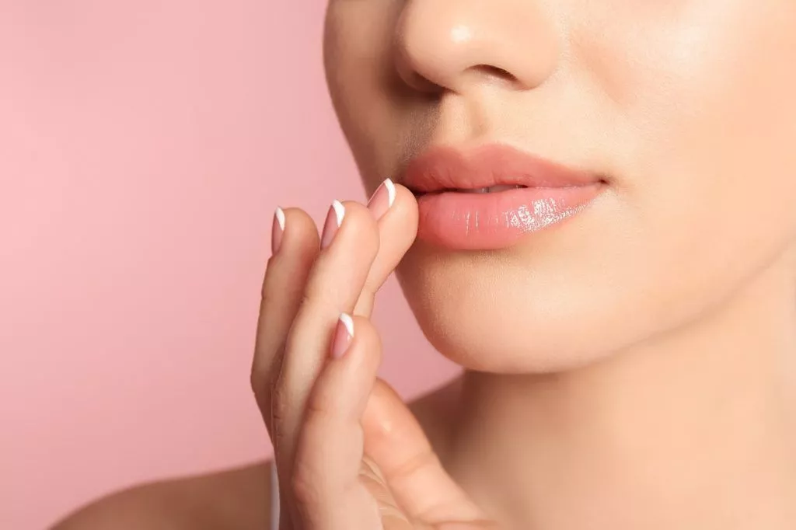
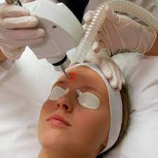
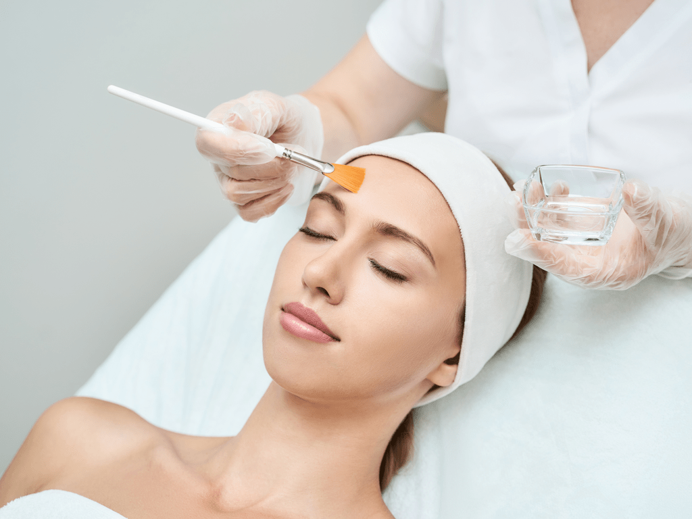
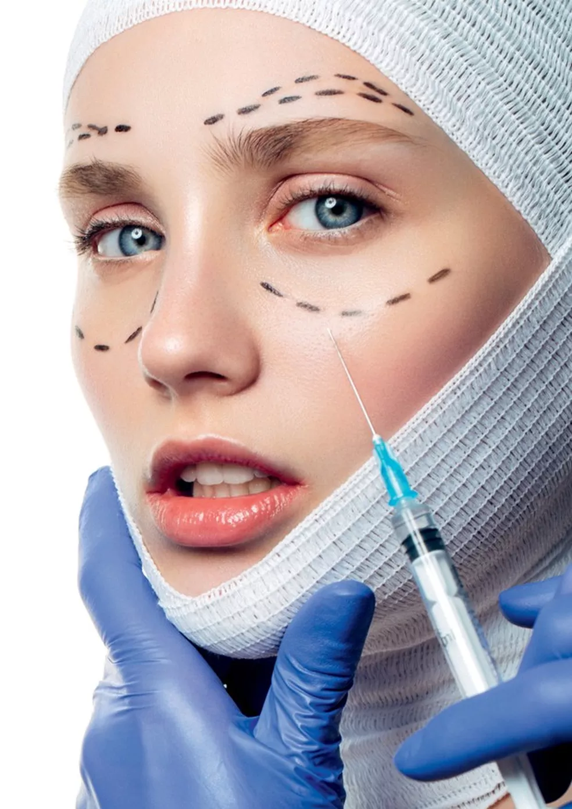

Tratamentos Faciais
Preenchimento Labial
|  | Esse procedimento tem o objetivo de aperfeiçoar o tamanho e o formato dos lábios. A substância aplicada nos lábios é o chamado ácido hialurônico. Essa aplicação acontece com o uso de uma agulha, mas também pode ser usada microcânulas. O preenchimento labial tem vários fins para a estética feminina, como: melhora do contorno labial, aumento da hidratação labial e sustentação da estrutura dos lábios e aumento do volume da região aplicada. Com o preenchimento, os efeitos do envelhecimento causados na região da boca podem ser revertidos ou amenizados. |
Laser Fracionado
|  | As principais funções do Laser Fracionado é diminuir rugas e linhas de expressão, combater a flacidez , eliminar manchas na pele e suavizar cicatrizes de acne. O tratamento é feito com a aplicação de um creme anestésico na área a ser tratada e a região dos olhos do paciente é protegida por um óculos especializado. Em seguida, o profissional dispara o laser na região do tratamento. Este laser pode causar algum desconforto em pessoas de pele sensível, sendo indicado utilizar o anestésico para fazer o procedimento. |
Peeling
|  | O peeling é um dos tratamentos estéticos mais procurados do Brasil. A sua função é renovar as células da superfície da pele através de uma descamação controlada. Essa descamação é feita com o uso de determinadas substâncias químicas ou métodos físicos. Esse procedimento é muito utilizado para reduzir rugas e linhas de expressão, clarear manchas, remover cicatrizes causadas por acne e controlar a oleosidade da pele. Desta forma, o Peeling é um tratamento muito eficiente contra a perda da elasticidade da pele e o envelhecimento precoce. |
Bioestimulador de Colágeno
|  | Esse é um dos principais procedimentos estéticos que renovam a firmeza da pele, reduzindo a flacidez e rejuvenescendo o tecido. Com o bioestimulador de colágeno, a mulher pode corrigir diversas áreas da face, como: mandíbula, queixo, testa, regiões dos olhos e bochechas. Além disso, o procedimento pode ser aplicado para melhorar a aparência de outras áreas do corpo, como: mãos, pescoço, abdômen, braços, coxas e nádegas. O bioestimulador de colágeno é um procedimento não-invasivo e completamente indolor. |